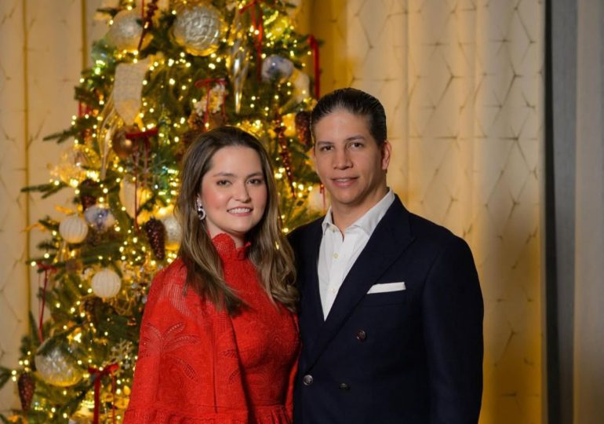
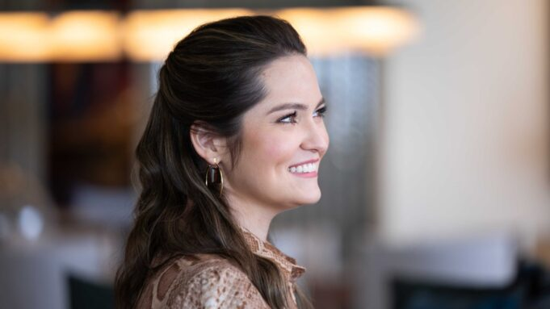
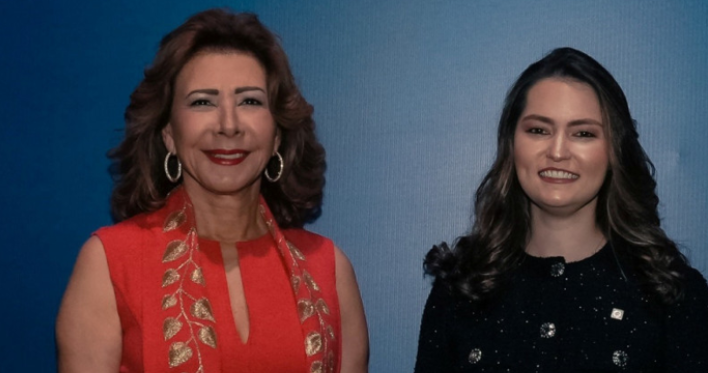
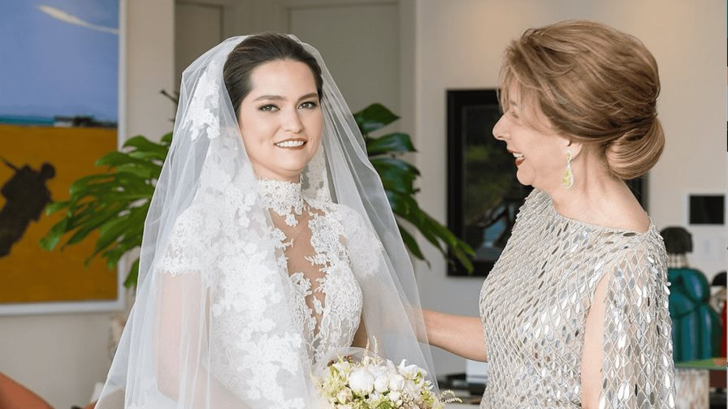
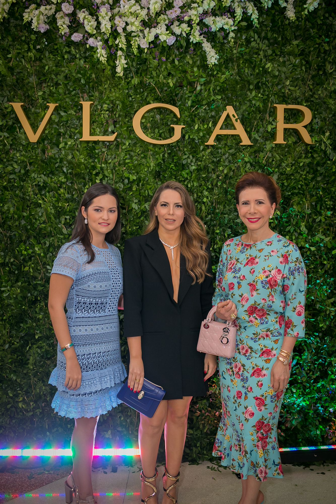

20 Octubre 2025
Fondo Académico y Cultural Alexandra Grullón, es una iniciativa para honrar la memoria de nuestra querida ale y al mismo tiempo, ayudar a jóvenes en condición de vulnerabilidad y afectados de la tragedia del Jet Set para que estos puedan realizar sus estudios universitarios.

Ser una organización líder en la transformación social de la República Dominicana, reconocida por su impacto en el desarrollo académico y cultural de jóvenes y adultos en situación de vulnerabilidad, asegurando un futuro con igualdad de oportunidades, justicia social y esperanza, especialmente para quienes han sido afectados por la tragedia del Jet Set.
Desde su nacimiento, en fecha 14 de julio de 1999, y por decisión de sus padres don Alejandro y doña Melba, su nombre de pila fue Alexandra María Grullón Segura. Sin embargo, para todos aquellos que tuvimos la dicha de compartir con ella en vida, su nombre de cariño fue siempre "Ale" y esperamos que lo siga llevando en las sendas de la eternidad. Así la llamaban en el seno familiar, entre sus compañeros de estudios, sus compañeros de labores y sus amigos.

Nuestro fin es ayudar e impulsar a jóvenes que se encuentren en condiciones de vulnerabilidad económica y social.
Fomentar el acceso inclusivo a la educación en todas sus modalidades, priorizando a jóvenes y adultos en estado de vulnerabilidad económica y social.
Contribuir al desarrollo integral de los beneficiarios a través de la capacitación académica, técnica y cultural, generando oportunidades sostenibles.
Preservar y promover el derecho a la educación y la cultura como pilares fundamentales para la dignidad humana y el progreso social.
Brindar becas educativas, talleres y programas de formación a sobrevivientes y familiares de las víctimas de la tragedia del Jet Set.
Crear y fortalecer espacios de expresión artística y cultural que impulsen el talento local y regional.
Establecer alianzas con instituciones educativas, culturales y gubernamentales para ampliar el alcance e impacto de los programas de la fundación.
Implementar mecanismos de evaluación para garantizar la calidad, transparencia y sostenibilidad de las iniciativas desarrolladas, entre otros.
Desarrollar proyectos comunitarios que fomenten la resiliencia emocional, la participación social y el liderazgo juvenil.
Es una iniciativa para honrar la memoria de nuestra querida ale y al mismo tiempo, ayudar a jóvenes en condición de vulnerabilidad y afectados de la tragedia del Jet Set (sobrevivientes e hijos de las víctimas mortales) para que estos puedan realizar sus estudios universitarios.


